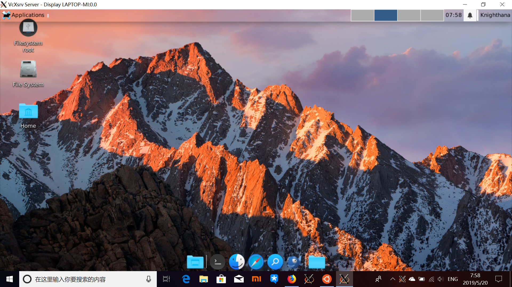
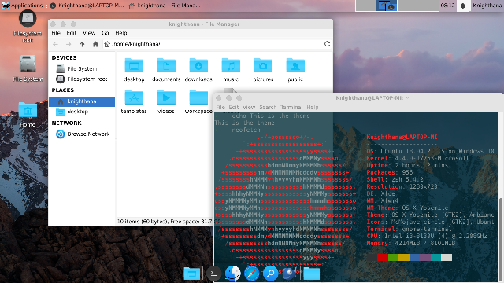

Yesterday I said tommorrow ... ( Sorry, I am sleepy
Yesterday I tried to solve the problem on my WSL X environment.
I have downloaded the OS-X like xfwm theme from [Github:B00merang-Project](http://github.com/B00merang-Project/OS-X-Yosemite.git).
But the theme has a fixed title bar setting. The title bar looks like CHM|0, but I am used to operate on CMH|\*.
Finally I found a solution on Xfce Wiki. Look at the website page how to.
*按钮布局*
也可以为特定主题定义固定的按钮布局。但需要提醒应该避免强制特定的按钮布局或者标题对齐及其他降低用户选择的设定（除非主题真的需要那样，比如下面会提到的 b5 主题）
# button_layout :
# O = Option menu
# T = Stick
# H = hide
# S = shade
# M = maximize
# C = close
# | = title
button_layout=OTS|HMC
现实的例子是，B5 主题只使用了关闭按钮。也就是 themerc 文件中写的是button_layout=C|
Solution:
Edit "~/.themes/themename/xfwm4/themerc"
Comment `button_layout=CHM|0`
Problem solved.
 Icons from McMojave-circle and McMojave-circle GitHub Page
Knighthana @ XDU
2019/05/20